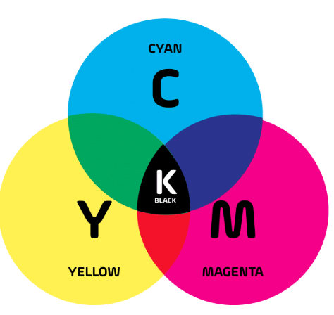
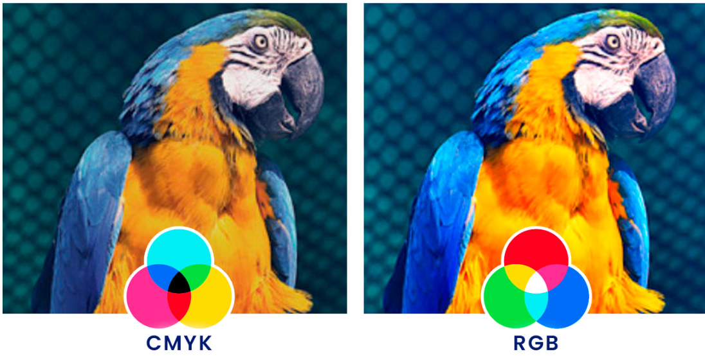
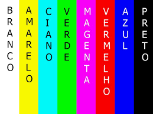
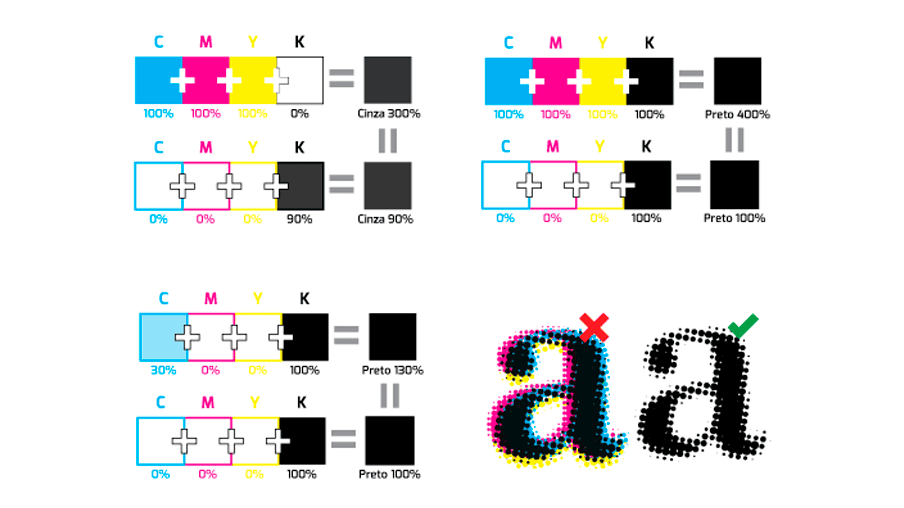
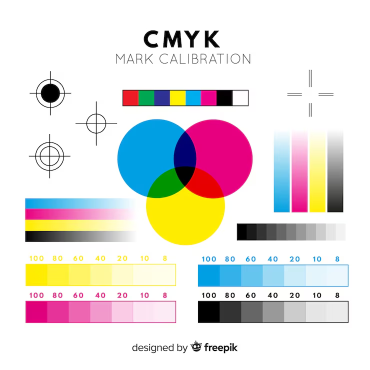

RGB e CMYK
Explore o universo das cores, suas propriedades físicas, percepção visual e aplicações na arte, design e tecnologia.
Explore o universo das cores, suas propriedades físicas, percepção visual e aplicações na arte, design e tecnologia.

Independentemente do processo pelo qual a cor é obtida, a sua impressão. aparência pode ser descrita em termos de três atributos. Esses atributos - ou dimensões - da cor têm recebido muitos nomes Em offset, a imagem original, depois de processada diferentes, tanto em português quanto em outros idiomas. eletronicamente, deverá ser transformada em fotolitos. Para Adotaremos aqui os mais usuais

CMYK é a abreviação de cian (c), magenta (m) e yelow (amarelo - y), sendo que o “k” representa a cor
preto e recebe esta simbologia por ser a cor chave, que em inglês é key. Este sistema de cores é
utilizado para todos os tipos de impressão, já que é composto por cores pigmento. O sistema de cores
CMYK é considerado subtrativo, ou seja, é necessário remover cores para chegar ao tom pretendido.
Podemos utilizar como parâmetro o preto que é composto pela mistura de todas as cores.
RGB significa Vermelho (Red), Verde (Green) e Azul (Blue). É um sistema de cores aditivas baseado na
emissão de luz, utilizado para exibir imagens em telas e dispositivos eletrônicos (como monitores,
televisores, celulares e iluminação LED).


Chamamos de gama de cores ao conjunto de cores impressão o uso de cores especiais é muito restrito ou reproduzíveis, ou detectáveis, por um determinado equipamento simplesmente não se pode utilizá-las. ou em uma dada situação. Elas somente poderão ser obtidas pela combinação das cores Os métodos de gerenciamento de cores visam eliminar essas básicas utilizadas em cada um desses sistemas de impressão. diferenças, ou pelo menos reduzí-las, por meio da calibração de cada equipamento usado, da sua caracterização ou seja, do Condições para a boa visualização das cores Reconhecimento da gama de cores que lhe é característica, possam se adaptar a cada Para evitar problemas de equipamento.
MUNDO RGB E CMYKK
Objetivo: Ver como a luz forma cores.
Materiais:
3 lanternas (ou celulares com lanterna)
Celofane vermelho, verde e azul (ou papel transparente colorido)
Parede branca
Como fazer:
Cubra cada lanterna com uma cor (R, G, B).
Apague a luz do ambiente.
Aponte as luzes na parede e sobreponha.
O que observar:
Vermelho + verde = amarelo
Verde + azul = ciano
Vermelho + azul = magenta
As três juntas = branco
Isso mostra o sistema RGB (luz), usado em telas como TV, celular e computador.
Mistura de tinta (CMYK na prática)
Objetivo: entender cores na impressão.
Materiais:
Tintas guache: ciano, magenta, amarelo (ou azul, rosa e amarelo se não tiver)
Pincel e papel
Como fazer:
Misture as cores duas a duas.
Observe o resultado:
Ciano + amarelo = verde
Magenta + amarelo = vermelho
Ciano + magenta = azul escuro
Isso mostra o sistema CMYK (tinta), usado em impressoras.
